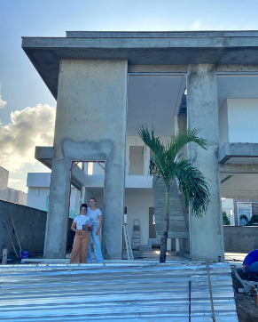
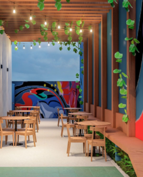
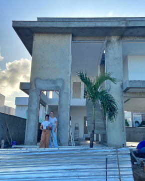
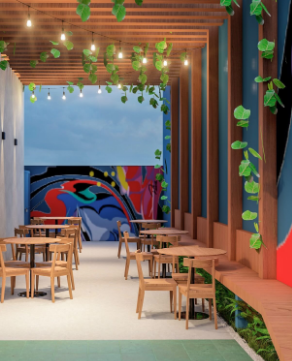

SOBRE
O Estudio84 nasceu em Natal, fruto da parceria e amizade entre duas sócias apaixonadas por
arquitetura. Com o passar do tempo, a trajetória seguiu com apenas uma delas à frente: a
arquiteta
Ana Beatriz Cavalcanti, que hoje conduz o escritório com dedicação e autenticidade, mantendo
viva a
essência do Estudio84.
Com projetos realizados em diversas regiões do Brasil, o Estudio84 se destaca por criar uma
arquitetura que conta histórias — ambientes que revelam identidade, despertam emoções e têm
propósito. O escritório é especializado em arquitetura e interiores, com forte atuação também em
espaços efêmeros, como exposições, eventos e instalações temporárias.
À frente do Estudio84, Ana Beatriz conduz cada projeto com sensibilidade, técnica e um olhar
apurado
para o que realmente importa: você e a sua história, criando espaços que vão além da estética e
traduzem quem você é de verdade.
PROJETOS
Pensar o projeto de interiores para um arquitetônico já em construção é um desafio. Precisamos extrair os pontos positivos do que já foi feito, adicionar nossa solução para o espaço e o gosto do cliente, tudo isso de maneira harmônica e bonita..
VisiteNessa cozinha a modificação foi completa e nós amamos o resultado A família queria uma renovação total dos móveis, mais espaço para guardar tudo e um ambiente integrado com a sala de jantar já que eles estão sempre fazendo alguma delícia na cozinha.
Visiteuma marcenaria toda branquinha que combinou demais com os detalhes de cor na pintura
VisitePensar o projeto de interiores para um arquitetônico já em construção é um desafio. Precisamos extrair os pontos positivos do que já foi feito, adicionar nossa solução para o espaço e o gosto do cliente, tudo isso de maneira harmônica e bonita..
VisiteIMAGENS
 


